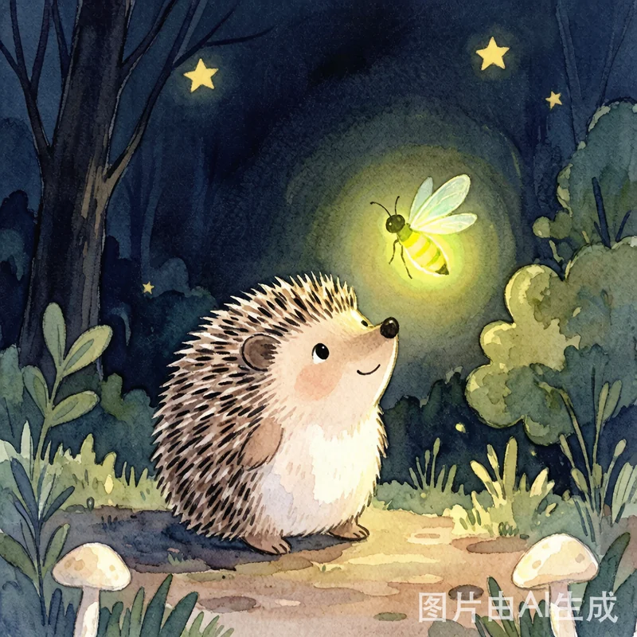
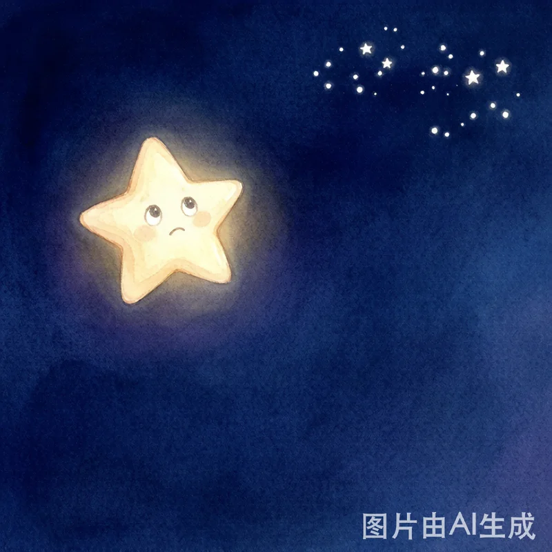
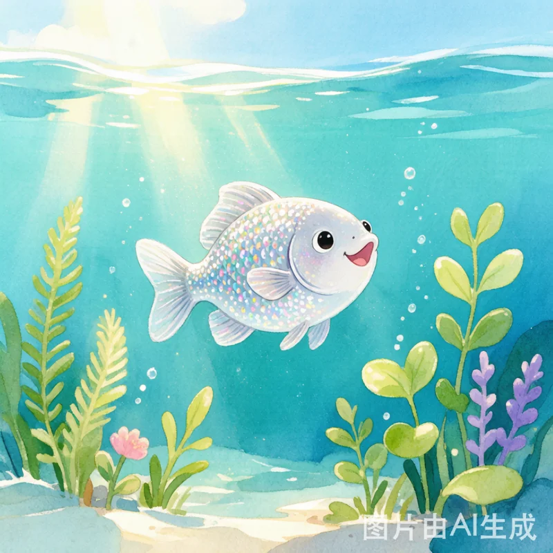

精jīng选xuǎn原yuán创chuàng儿ér童tóng绘huì本běn · 陪péi伴bàn每měi个gè温wēn暖nuǎn的de夜yè晚wǎn
陪péi伴bàn是shì最zuì温wēn暖nuǎn的de光guāng
爱ài与yǔ温wēn柔róu守shǒu护hù梦mèng乡xiāng

勇yǒng敢gǎn发fā出chū自zì己jǐ的de光guāng
勇yǒng敢gǎn探tàn索suǒ星xīng辰chén大dà海hǎi
分fēn享xiǎng让ràng快kuài乐lè加jiā倍bèi
坚jiān持chí就jiù能néng找zhǎo到dào光guāng芒máng


勇yǒng敢gǎn是shì害hài怕pà也yě要yào往wǎng前qián走zǒu